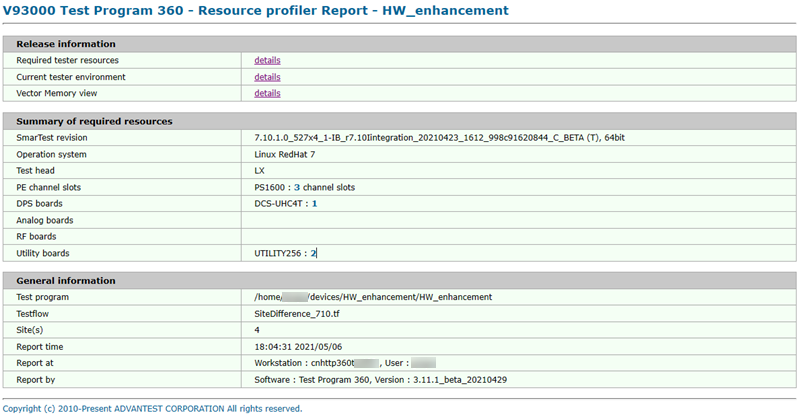

Test program resource profiler report
The test program resource profiler report provides basic information on the test program configuration, an overview of the required resources, and links to the detailed analysis reports.

Release information
The contains links to the detailed analysis reports. See Report for the required resources, Report for the resource used when generating reports, and Vector memory usage report for more information.
The items displayed in this table are determined by the options you have selected in the setup before execution.
Summary of required resources
This
table contains the summary of the required resource information.
- SmarTest revision
- The SmarTest revision with which the test was performed.
- Operation system
- The operation system of the workstation.
- Test head
- The test head type.
- PE channel slots
- The card name and the count of channel slots where the card is used.
- DPS boards
- The name and number of the DPS boards you tested.
- Analog boards
- The name and number of the analog boards you tested.
- RF boards
- The name and number of the RF boards you tested.
- Utility boards
- The name and number of the utility boards you tested.
General information
This table lists the basic information of the system configuration and the report:
- Test program
- The test program that was used to generate the current report.
- Testflow
- The main testflow of the test program that was used to create the report.
- Sites
- The number of enabled sites that were configured in the program in SmarTest.
- Report time
- The time at which the current report was created.
- Report at
- The host name of the workstation on which the test program was executed, and the user name who created the report.
- Report by
- The TP360 revision that was used to create the current report.
By default, the report is saved in the directory:
/tmp/.vda/user_name/TPR/report/
To save the report to a different directory, click in the Report view.
Functional changes
- Introduced in SmarTest 7.2.2
- SmarTest 7.10.1: Added the vector memory view.